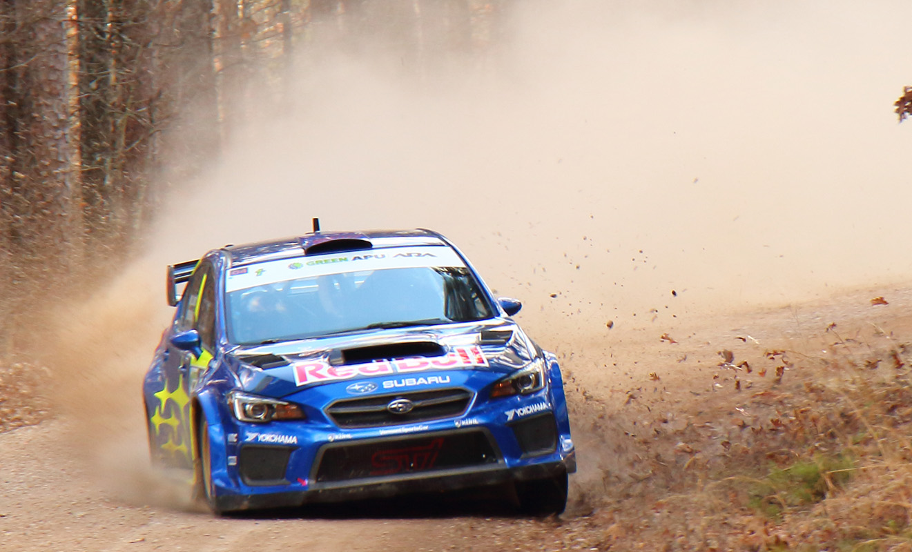
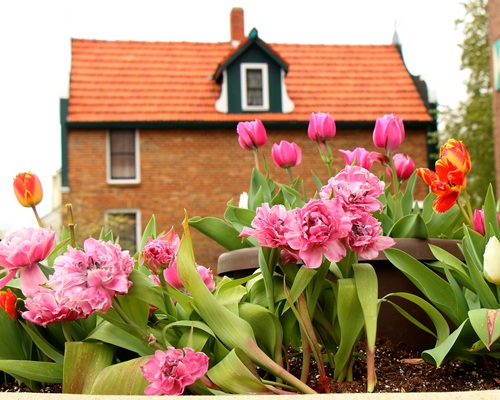
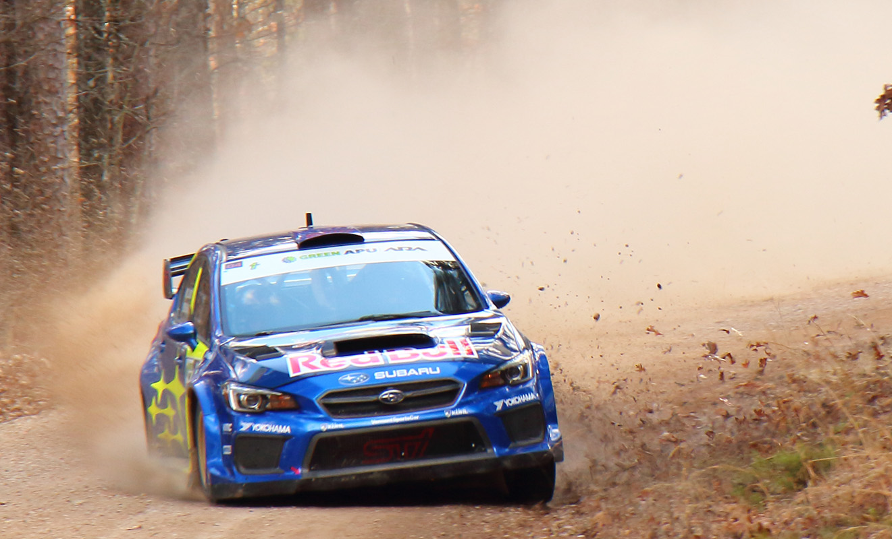
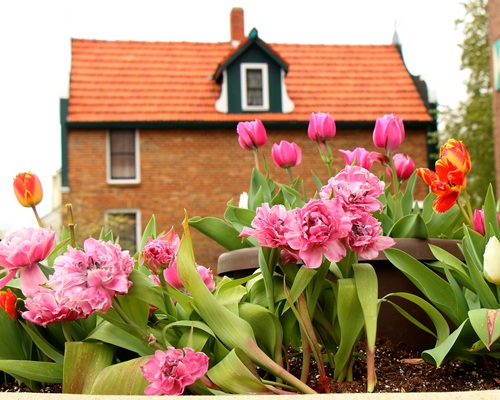

The photographer for this project is Chris Almack, my father. My whole life we have taken long road trips and short road trips, and I loved seeing the different water towers and pointing them out. My father is a photographer, so he started taking pictures of every water tower he saw. This amounted to a collection of hundreds of water towers across the country, which he compiled into a book and gave to me when I moved across the country. The book focused mainly on water towers from Southeast Iowa where I am from, so it was a nice reminder of home.
Chris Almack’s photography, however, is not usually focused on water towers. Instead, he often photographs nature and cars. Things that he sees as “powerful and majestic”. Some examples of his other work are shown below, and you can find more pictures on his Facebook.

 


